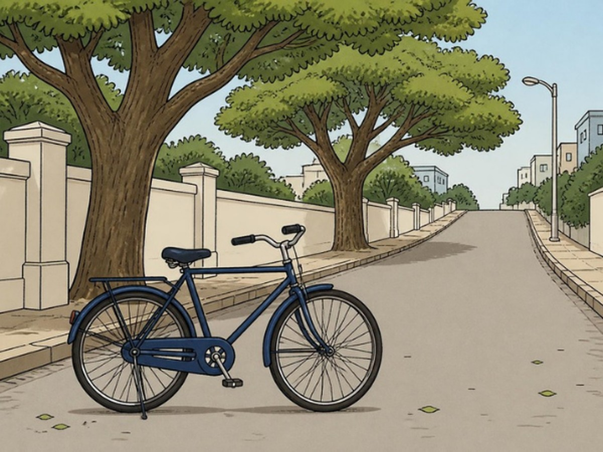

CLASS 11 · PHYSICS · CH 1 UNITS AND MEASUREMENT
MOTION NOTEBOOK
Fundamental and
Derived
Built from blocks on one bicycle ride
THREE THINGS · ONE MEASUREMENT
All three are built from length
AARAV'S RIDE · THE SPEEDOMETER

SPEEDOMETER
15
km/h
FUNDAMENTAL (BASE) QUANTITIES · SI PICKS 7
DERIVED = BUILT BY × AND ÷
Only multiply or divide the blocks
SIMULATION · AARAV'S RIDE
STOPWATCH → TIME · BASE
TAPE → LENGTH · BASE
LIVE READOUT
LIVE GRAPH ·
v
AGAINST
t
slope =
a
= 1 m/s²
BUILD FORCE · 3 STEPS
ONLY THREE BASE UNITS
FUNDAMENTAL · MASS
EXAMPLE FIGURES
One instrument, one reading
DERIVED · DENSITY OF WATER
Mass
1 kg
Volume
0.001 m³
Needs two measurements, then divide
ONE BASE QUANTITY · LENGTH
WHY DOES SPEED NEED TWO UNITS?
km
LENGTH · BASE
h
TIME · BASE
15 km/h
SPEED · DERIVED
Speed has two parents: a length and a time
7 INDEPENDENT BLOCKS
None can be made from the other six
TRY TO BUILD ONE FROM THE OTHERS
Each base quantity is a fresh block
A steel block is 20 cm × 10 cm × 5 cm. Its mass is 7.8 kg. Find its density.
THE STEEL BLOCK
V =
0.001
m³
ρ = 7800
kg/m³
CAN YOU ANSWER THESE WITHOUT HELP?
Remember this.
Derived = base quantities,
× and ÷